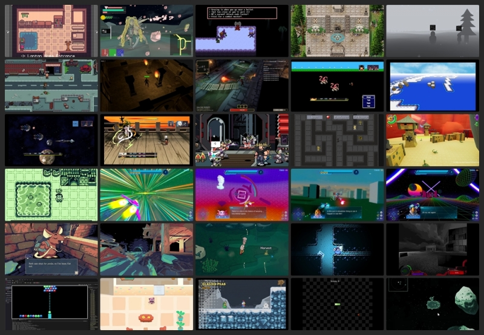

BlueSky Quick Recap #indiedev 2025-08-28
Show Only Saved Posts
Saved Post Num:
---
<< Previous
Home
Next >>

Time Range:
28 Aug 2025
Total Number of Post: 670+
Number of Post Displayed: 44
Post Selection Guidelines
<< Previous
Home
Next >>